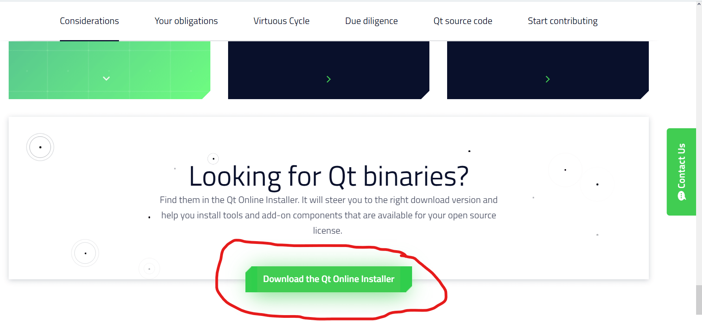
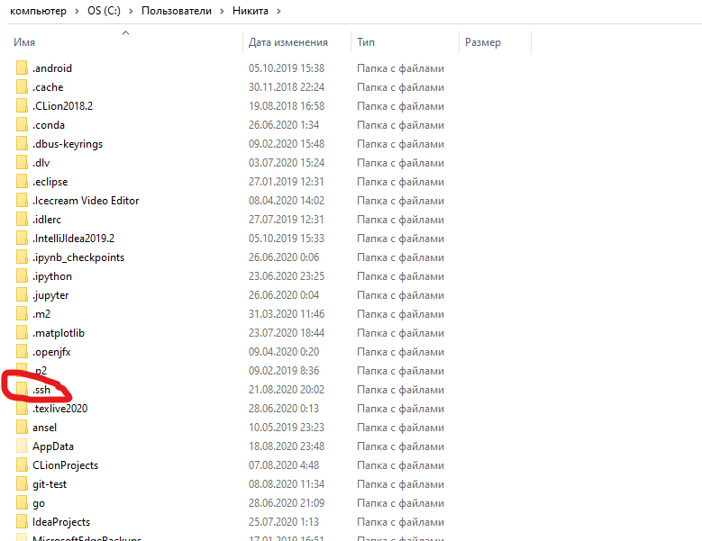
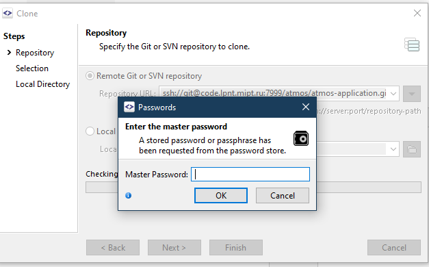
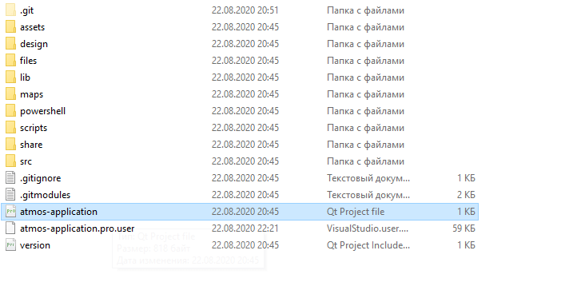

Инструкция
Знакомство с Jira и Bitbucket
При работе с проектами применяются коммерческие продукты компании Atlassian: Jira и BitBucket. Для авторизации необходимо использовать выданные логин и пароль, поменять их на данный момент нельзя.Jira
Jira — это система управления проектами. Здесь для каждого проекта можно увидеть issues — задачи, поставленные руководителем, и прогресс в их решении.
Заглавная страница:

Пример задачи:


BitBucket
Bitbucket позиционируется как аналог GitHub, ориентированный на коммерческие команды разработчиков. Предоставляет полноценный интерфейс для работы с проектом: выполнять clone, fork и предлагать pull request-ы, сравнивать версии, просматривать исходный код, commit-ы, ветки и многое другое.
Для работы с BitBucket рекомендован GUI-клиент SourceTree в связке с инструментами Tortoise Git и Putty. Также можно обратить внимание на достаточно удобный аналог — SmartGit, который не требует установки дополнительных инструментов, в частности, имеет встроенный ssh-клиент.
Инструменты для локальной работы
QT
Данный проект написан при помощи коммерческого фреймворка QT. Для работы с ним потребуется установить как сам QT, так и IDE Qt Creator. Онлайн-установщик доступен здесь

Важно! Нужна open-source версия, так как она бесплатна :) Ссылка выше — именно на её установку.
Минимальный достаточный набор компонентов для успешного запуска приложения:

MSVC
Кроме того, необходим набор инструментов разработки MSVC и именно он, с помощью MinGW запустить проект не получится. Если на компьютере установлена IDE Visual Studio, отдельно его устанавливать не нужно — он есть в комплекте. Приготовьте ещё примерно 4.5 Гб места.Подключение проекта
SSH-ключ
Прежде всего необходимо сгенерировать ssh-ключ или использовать уже имеющийся. Необходимая и достаточная инструкция по генерации на английском. Выпишу здесь важные замечания:
- нужно, чтобы был установлен Git вместе с Git Bash;
- при генерации ключа с помощью команды ssh-keygen использование электронного адреса рекомендовано, но не обязательно.
В папке пользователя должна появиться папочка .ssh с ключом:
Далее, ssh-ключ нужно добавить в свои личные ключи.
Клонирование
Наконец, всё готово для клонирования! Теперь нужно открыть репозиторий (фактически папочка проекта) на BitBucket, и нажать 'Clone', если при этом воспользоваться опцией 'Clone in SourceTree', то браузер выведет alert с предложением открыть указанную ссылочку.. нет, не обязательно через SourceTree, а через приложение, которое по умолчанию обрабатывает протокол ssh на используемом компьютере, например, SmartGit:

Далее при нажатии на 'Next' предложат ввести пароль или кодовое слово, которые были установлены при генерации ключа:
Нажимая 'Next', обращаем внимание на галочку в 'Include submodules': это автоматически добавит сабмодули — дополнительные репозитории, которые подключаются в этот проект извне (т.о. они могут быть использованы в различных проектах без дублирования).
Также стоит переключить ветку на dev (приложение запустится и без этого, но разработка ведётся именно в этой ветке):
Запуск
Последний рывок: открываем atmos-application.pro через QT Creator (открывается там по умолчанию), внутри выбираем MSVC:
Далее наверху Сборка -> Запустить qmake, после завершения нажимаем на зелёную стрелочку, видим "завершился с кодом 0" и радуемся :)